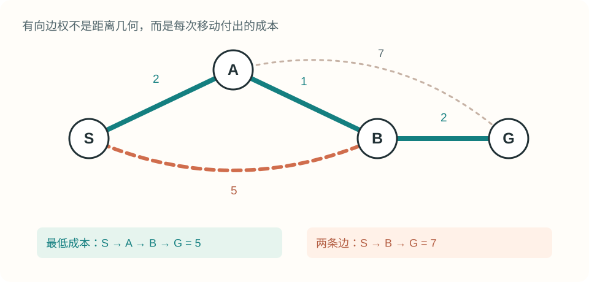
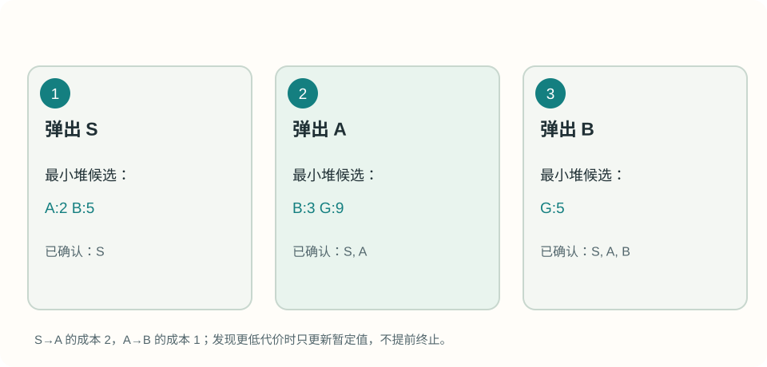

Dijkstra：为什么最小代价节点可以定稿？
在带权图上寻找一条真正成本最低的路线：从松弛、堆和不变量开始，弄清楚正确性、复杂度与不适用情形。
为什么边数少的路径反而更贵？
在一张仓库交通图上，S→B→G 只有两段路，但第一段收费（或风险代价）为 5，第二段为 2，总成本是 7。S→A→B→G 有三段，成本却是 2+1+2=5。最少经过几条边与边权相加最小不是同一优化目标；BFS 无法根据非统一权重作出正确选择。
设图 G=(V,E)，每条有向边 (u,v) 的代价 w(u,v)≥0。目标不是最短跳数，而是在从 s 到 t 的可行路径中，找到所有边权之和最小者。如果行驶代价按米、秒、能量或风险定义，也要保证累加方式有意义。
SHORTEST PATH · 06

松弛：唯一关键操作
从源点 s 开始，建立暂定距离 d(s)=0，其余顶点 d=∞。每次选择暂定距离最小的顶点 u，尝试通过边 (u,v) 改进 v 的距离。如果经过 u 的路线更便宜，就覆盖距离并记录父节点。这个动作叫松弛（relaxation）。
注意这里的 d(v) 是目前发现的路径所给出的上界，不是下界；只有在合适的非负权条件下、节点从最小堆中以其有效最小距离弹出时，才可将 d(u) 认定为最终最短距离。父节点 parent[v]=u 与数值一起更新，用于结束时回溯路线。
SHORTEST PATH · 06

为什么弹出节点后可以把它“定稿”？
核心不变量：当尚未定稿的顶点中，u 具有最小暂定距离 d(u)，并且所有边权非负时，不可能存在一条经过尚未定稿顶点、再返回 u、且总代价更低的路线。理由是：这样的路线第一次穿越到未定稿集合时，已走过的成本不小于此前已定稿前缀的成本，后面的非负边又不可能将其降低到 d(u) 以下。
于是 Dijkstra 通过“全局最小的有效堆顶 + 非负边权”实现最短路径。负边可能使已定稿的节点以后出现更优距离，破坏这条论证；有负权时应改用适当的算法，例如 Bellman–Ford，并另外检测负环。
终止条件：如果只求 s 到 t，可以在 t 的有效堆项被弹出并确认时停止；仅在 t 被首次“发现”或入堆时停止是不正确的。
按照真实的堆顺序走一遍
在同一小图上，将初始状态、第一次松弛、替换更好成本、最终确认为最短路的过程拆开。最小堆按 (cost, node) 排序：弹出 S(0)，加入 A(2)、B(5)；弹出 A(2)，用更好的 B(3) 更新 B，并加入 G(9)；弹出 B(3)，将 G 更新到 5；最后弹出 G(5)，停止。旧的 B(5)、G(9) 堆项不需要手动删除，检查是否与当前有效距离相等即可丢弃。
SHORTEST PATH · 06

在单位权网格中 Dijkstra 会表现为按距离扩张的层状前沿；若地图包含高代价区域，扩张前沿不再是几何圆形。在成本累计规则相同且启发 h≡0 时，Dijkstra 也等价于通常讨论的均匀代价搜索。
完整而有限的 Python 实现
这里采用 Python 3.10+ 标准库 heapq，邻接表以 graph[u] = [(v,w),...] 表示有向边。无向图需显式提供反向边。为了避免“过期堆项误被定稿”，在堆顶弹出后先比较当前最佳成本，并维护 settled 集合。
from heapq import heappush, heappop
from math import inf
def dijkstra(graph, start, goal):
"""有向/无向邻接表，所有边权必须非负。"""
for edges in graph.values():
for _, weight in edges:
if weight < 0:
raise ValueError("Dijkstra requires nonnegative edges")
distance, parent = {start: 0}, {start: None}
pq = [(0, start)]
settled = set()
while pq:
cost, u = heappop(pq)
if u in settled or cost != distance.get(u, inf):
continue # 去除过期队列项
settled.add(u)
if u == goal:
route = []
while u is not None:
route.append(u)
u = parent[u]
return cost, route[::-1], settled
for v, w in graph.get(u, []):
candidate = cost + w
if candidate < distance.get(v, inf):
distance[v] = candidate
parent[v] = u
heappush(pq, (candidate, v))
return inf, None, settled
graph = {
"S": [("A", 2), ("B", 5)],
"A": [("B", 1), ("G", 7)],
"B": [("G", 2)],
"G": [],
}
cost, path, settled = dijkstra(graph, "S", "G")
assert cost == 5
assert path == ["S", "A", "B", "G"]
assert dijkstra(graph, "G", "S")[1] is None # 有向边
try:
dijkstra({"S": [("G", -1)]}, "S", "G")
raise AssertionError("negative edge should be rejected")
except ValueError:
pass
print("optimal cost:", cost, "route:", " → ".join(path))该示例的断言覆盖了最优总代价、路径回溯、有向不可逆、负边拒绝四个条件。它不包含机器人足迹、时间窗、实时变更与几何碰撞；这些需要在生成边时另外处理。
复杂度与数据结构的真实区别
| 实现 | 常见时间界 | 额外空间 |
|---|---|---|
| 邻接矩阵 + 线性扫描 | O(V²) | 矩阵 O(V²) |
| 邻接表 + 二叉堆 | O((V+E) log V)，允许重复堆项时更精确可记 O((V+E)log(V+E)) | O(V+E) 含图与队列条目 |
| 邻接表 + 支持 decrease-key 的堆 | 取决于数据结构；如 Fibonacci heap 的理论界 O(E+V log V) 摊还 | 与实现相关 |
这些都是针对显式图计算的理论数量级，并不包括地图构建、碰撞检测或磁盘 I/O。图稀疏时，二叉堆实现通常比全矩阵扫描更有吸引力；不能不做实测就给出统一的运行时间倍数。
什么时候 Dijkstra 不是正确选择？
- 边有负权：其节点定稿证明失效；负环还会导致“最短路”无定义。
- 代价随时间变化：静态单一图无法表达提前到达时遇到不同拥堵或移动障碍。
- 状态表示不完整：同位置不同朝向或速度并不一定可以视为同一顶点。
- 目标很远且已有可信方向信息：若有一致的下界启发式，A* 往往可以更有目标地展开，但不是每张图都更快。
工程验证应同时保存输入图、起终点、边权定义、路线成本、弹出次数与时间，做到比较的是相同问题，而非不同模型之间的数字。